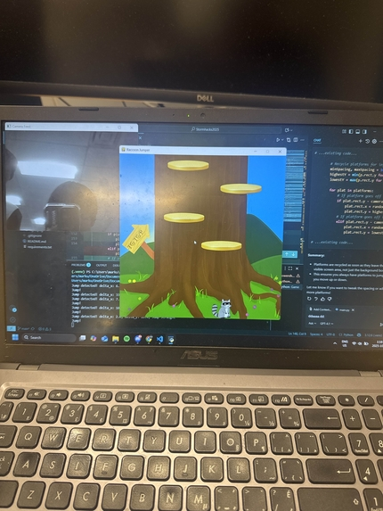

Activities
Beyond coursework — events, personal projects, and volunteer work that shaped my perspective and skills.
Events
Conferences, hackathons, and industry events.
Showcase · July 15, 2026 🏆 People's Choice
HUBBUB'26 — CityStudio Showcase
Presented PrepMate, a multifunctional induction stove cover for Vancouver renters. Won People's Choice for "Most Creative Project" and tied for "Most Promising Climate Impact."

Hackathon · Oct 4-5, 2025
Racc-Moon — StormHacks 2025
Participated in my first 24-hour hackathon. Worked in a team of four. Contributed art assets for a game where your real-life movements launch a raccoon to the moon. Built with Python, Pygame, OpenCV, and MediaPipe.

Personal Projects
Experimental work outside of coursework and client projects.

Volunteer
Community involvement and volunteer work.
Jul 2024 — Present
Greater Vancouver Food Bank
Volunteer
- Wash, slice, and prepare produce for dehydration
- Quality check, sort, and package fresh food
- Provide front-line client support and maintain organization
Jul 2021 — Jul 2022
Vancouver Public Library
Teen Advisory Group
- Contributed to publishing Ink Magazine and organizing the Page by Page Contest
- Provided input on design and promotion
- Collaborated with peers to improve programming and services
Sep 2017 — Jun 2022
South Vancouver Neighborhood House
Neighborhood Youth Initiative — Volunteer
- Coordinated and delivered youth programming and events
- Developed activity schedules and logistics with staff and peers
- Designed promotional materials using Canva
Mar 2022
Guardteck Security
Intern
- Reported to supervisor on task completion and issues
- Handled inventory tracking and management
- Made phone calls to employees for shift scheduling